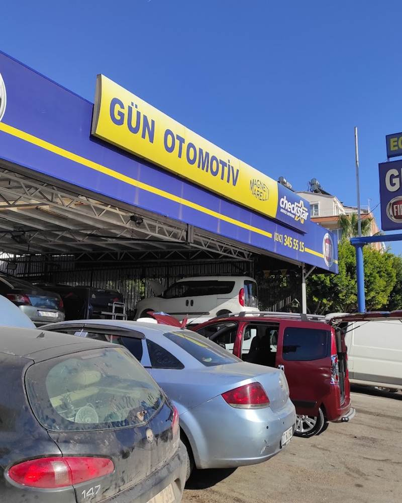
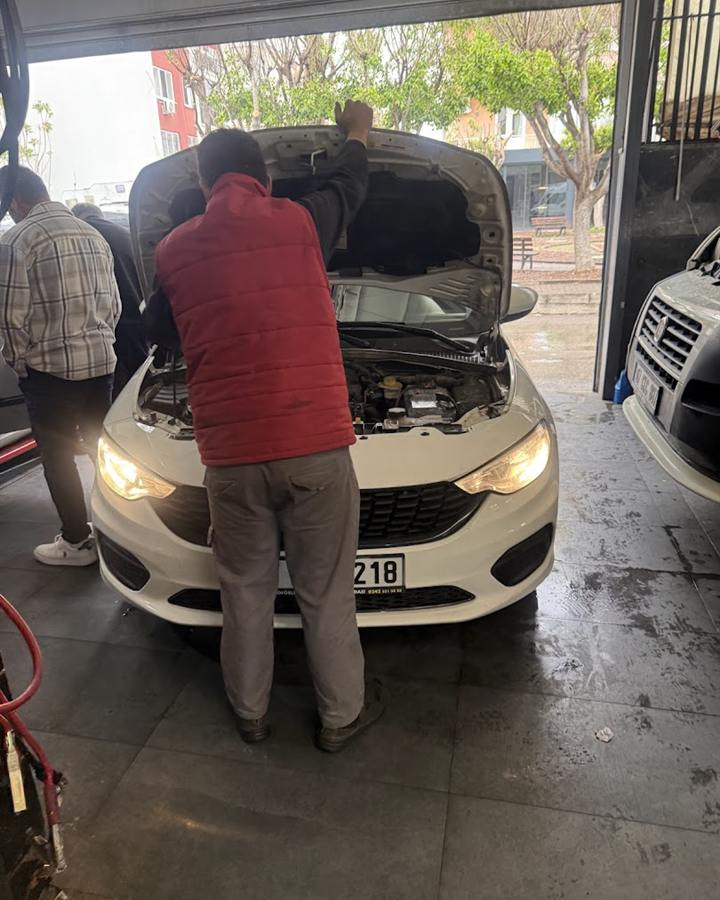
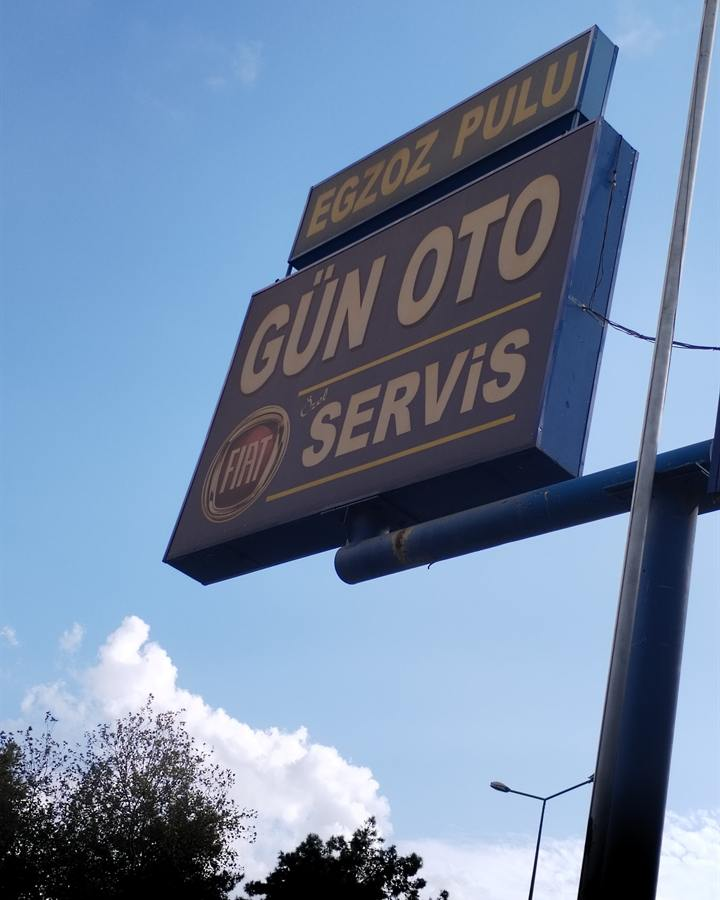
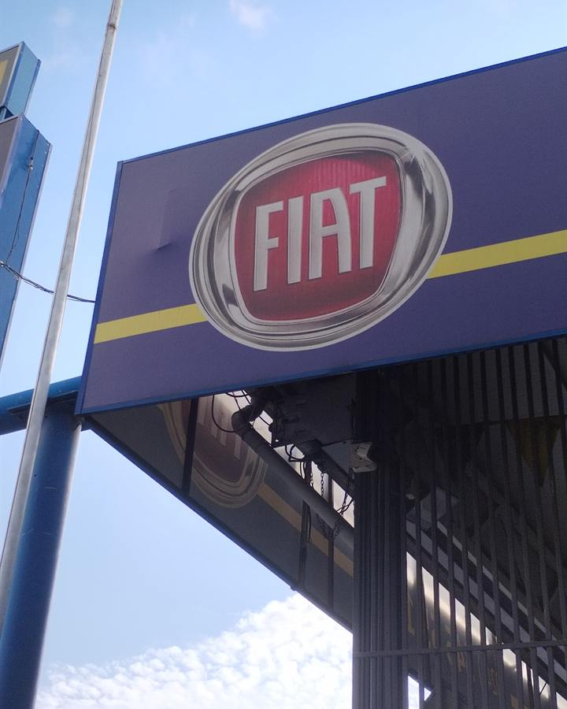
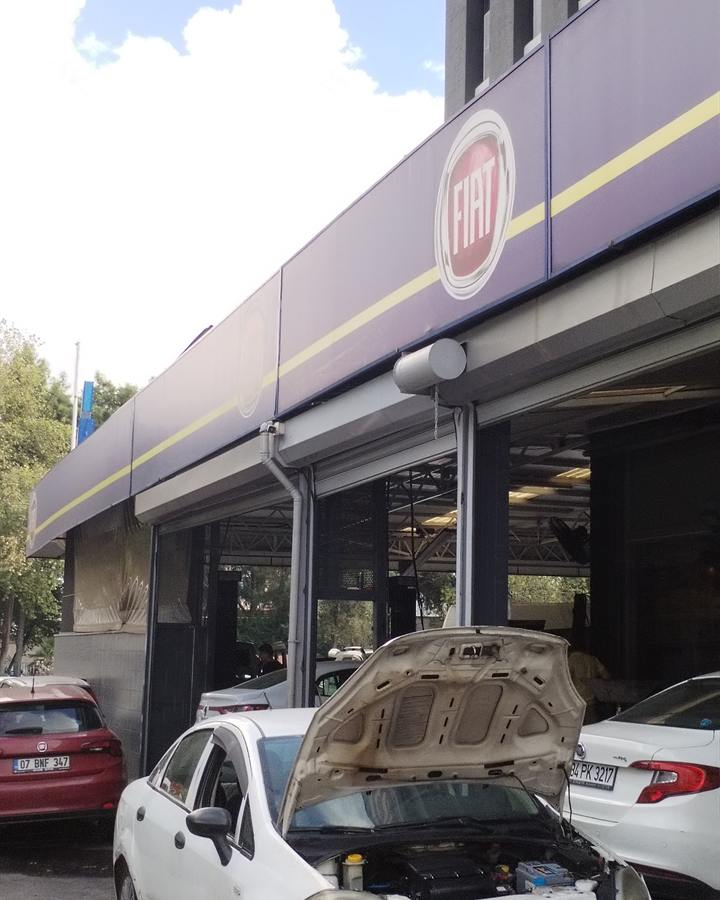
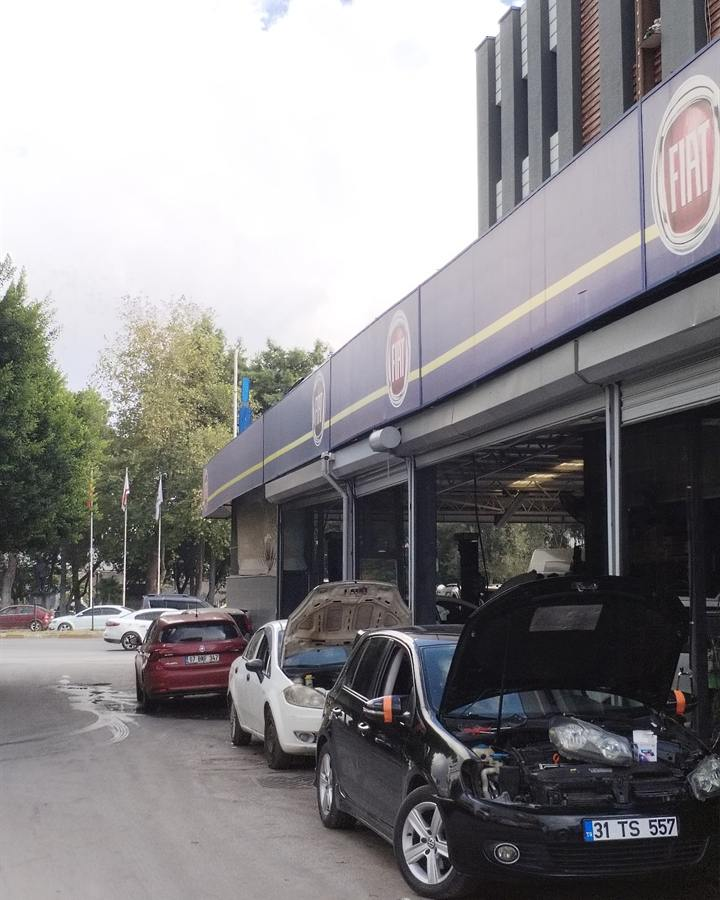
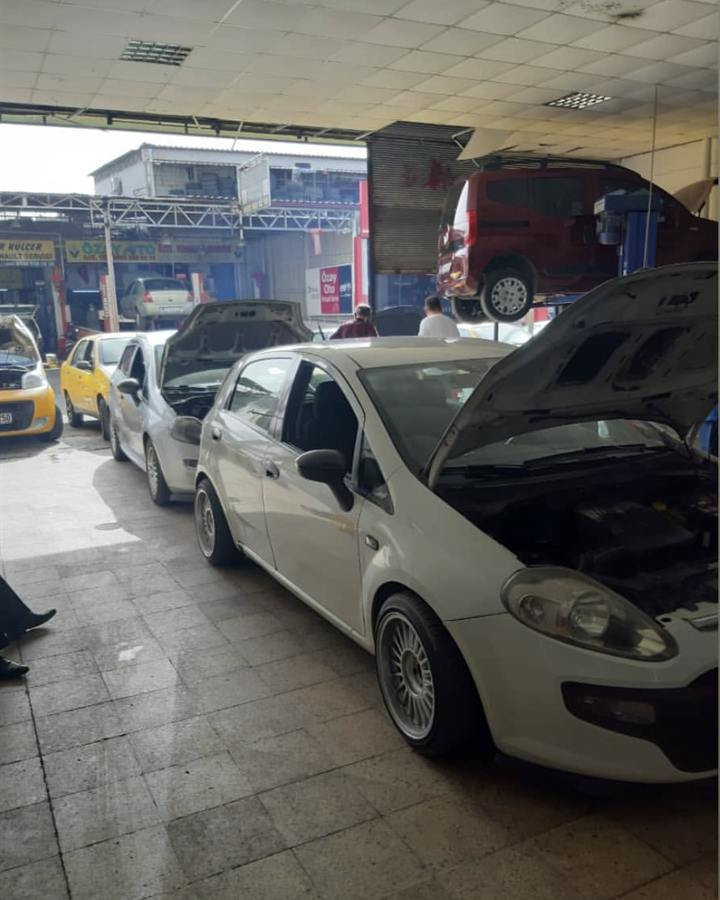
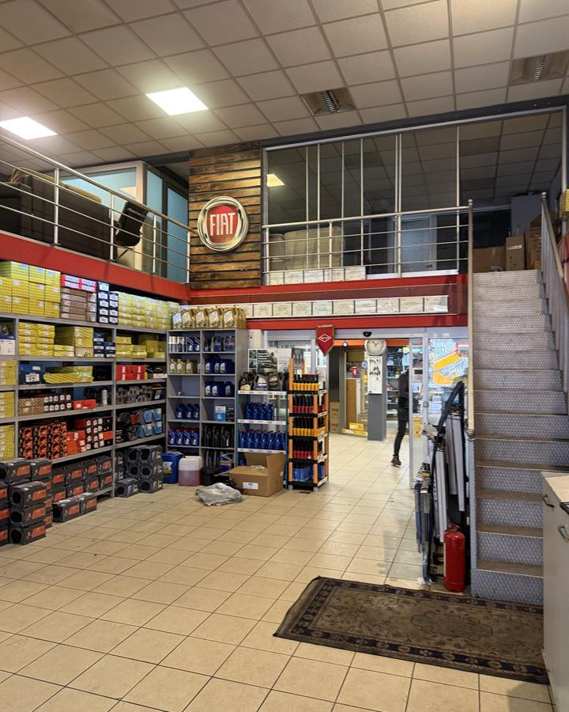
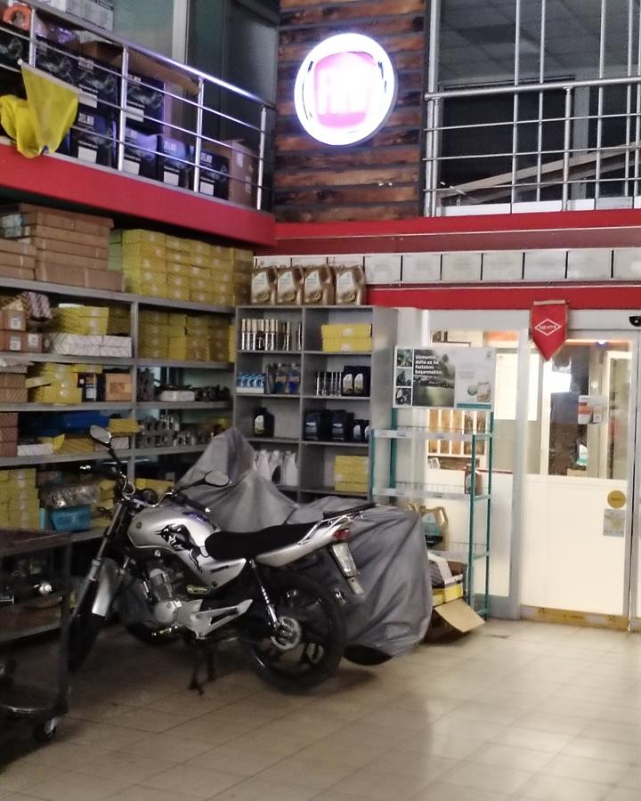
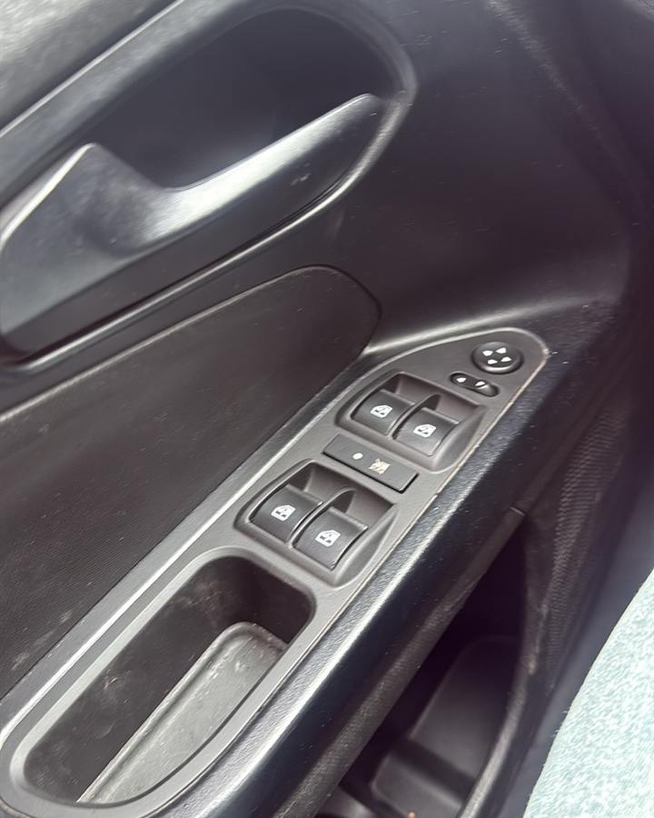

Periyodik bakım
Yağ, filtreler ve kontroller kılavuz kilometresine göre. Bakım geçmişiniz kayıt altında.

Hizmetler
Yağ, filtreler ve kontroller kılavuz kilometresine göre. Bakım geçmişiniz kayıt altında.
Arıza lambası, stop etme, güç kaybı. Önce sebebi buluyoruz, sonra parça değiştiriyoruz.
Yağ eksiltme, triger, debriyaj, motor rektifiyesi. Orijinal ve muadil parça seçeneğiyle.
Akü, marş, şarj sistemi, kapı ve direksiyon tuşları, sensör arızaları.
Hararet, antifriz sızıntısı, termostat ve su pompası. Yolda kalmadan çözüm.
Balata, disk, amortisör, rot ve rotil. Diğer markalara da bakıyoruz.









Hakkımızda
Gün Oto, Kepez Gazi Bulvarı'nda Fiat ve Fiat grubu araçlara özel hizmet veren bağımsız bir servis. Egea'dan Doblo'ya, Linea'dan Fiorino'ya her gün bu araçlarla çalışıyoruz.
Aracınızı teslim alırken sorunu size gösteriyor, fiyatı işe başlamadan söylüyoruz. Müşterilerimizin bir kısmı başka şehre taşındığı halde bakım için yine bize geliyor.
Google yorumları
614 yorum
Orijinal parça kullanmaları ve ustaların markaya hakim olması çok güven verdi. Sorduğum tüm sorulara net cevap aldım.
Yıllardır Fiat marka araç kullanıyorum. Linea, Doblo ve Egea. Yıllardır tercihim Gün Oto oldu. Şu an başka şehirde yaşıyorum, yine buraya geliyorum.
Daha önce başka bir servise gittiğimizde sorunun kaynağını bulmak yerine hemen fiyat çıkardılar. İyi ki Gün Oto'ya uğramışız. Usta sorunun kaynağını bize gösterdi.
Birçok başka servise gittim, bulamadıkları arızayı buldular. Kullandıkları cihazlar son sistem.
SSS
Sorunuz burada yoksa arayın, telefonda da yardımcı oluyoruz.
Gelebilirsiniz, ama yoğun günlerde bekleme olabilir. Bir gün önceden aramanız aracınızı aynı gün teslim almanızı kolaylaştırır.
Uzmanlığımız Fiat grubu araçlar. Diğer markalarda bakım ve mekanik işler için arayıp aracınızı sorun.
Evet. Bütçeye göre kaliteli muadil parça seçeneği de sunuyoruz. Hangisinin takılacağına siz karar veriyorsunuz.
Standart bakım genellikle birkaç saat sürer. Sabah bırakılan araç çoğunlukla aynı gün teslim edilir.
Evet. Plaka, model ve kilometreyi formdan gönderin ya da arayın, bakım fiyatını önceden söyleyelim.
Hayır. Pazartesiden cumartesiye 08:30 ile 18:00 arası açığız.
İletişim
Plakanızı ve şikâyetinizi yazın, aynı gün sizi arayalım.
TR 0242 345 55 15| Pazartesi | 08:30 - 18:00 |
|---|---|
| Salı | 08:30 - 18:00 |
| Çarşamba | 08:30 - 18:00 |
| Perşembe | 08:30 - 18:00 |
| Cuma | 08:30 - 18:00 |
| Cumartesi | 08:30 - 18:00 |
| Pazar | Kapalı |